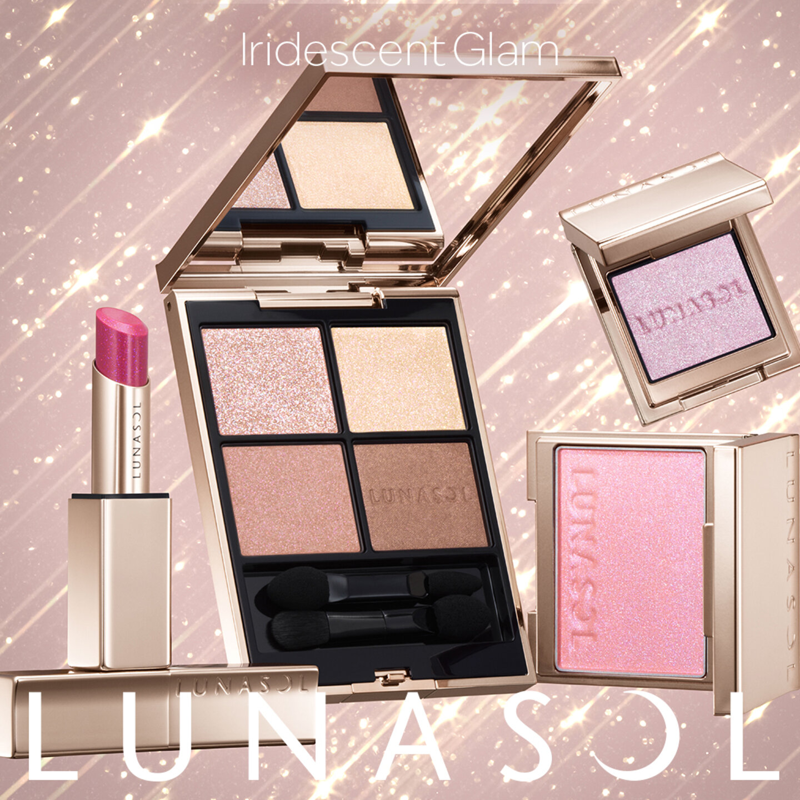
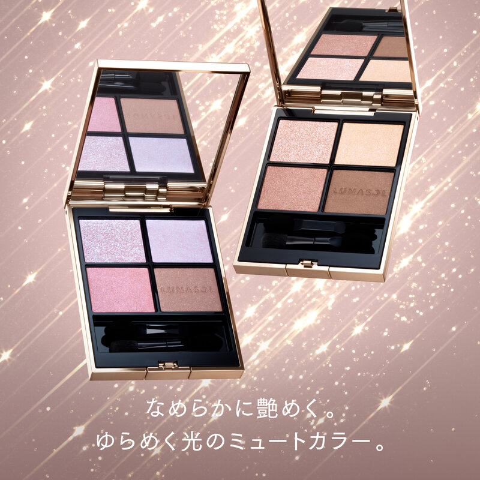

← 图文库NOVEMBER 2026 · LUNASOL
11月日本美妆新品｜LUNASOL眼影
11月新品资讯 · 可复制文案
11月日本美妆新品｜LUNASOL眼影
LUNASOL 11月这波有四色盘和偏光单色，想买整盘或只补一颗闪片，可以分开看。
这次有什么？
四色盘EX18 Cashmere Prism、EX19 Iris Soiree；单色EX21／EX22／EX23。
• 四色眼影限定色：日本含税¥7,700
• 偏光单色眼影：日本含税¥3,850
什么时候卖？
• 四色眼影限定色：11月06日；先行渠道需逐色查库存；预约日期暂不统一填写
• 偏光单色眼影：11月06日；官网：10/7 10:00先行销售；售罄后11/6 10:00再开售
官方已公布11/6上市；10/9–10体验活动已结束
10/7官网先行已开始；当前分色库存未确认
购买前看这里
核对图中色号，不能用同系列旧色试色代替这轮限定色。
近铁天王寺、大丸心斋桥的具体安排与库存，以专柜回复为准。
#日本美妆新品 #11月新品 #圣诞限定
信息依据核对日期：2026-10-14
文案格式更新：2026-10-25（未重新核验全部日期与库存）
来源：品牌／百货／媒体，具体链接如下
https://www.lunasol-official.com/lp/contents/event2610
https://www.lunasol-official.com/categories/pointmake/eye-shadow/p/4973167016961
下载文案
官方系列图，含同系列其他商品 · 图片来源
官方系列图，包含本文四色盘；非真人试色 · 图片来源预约与商品信息
N08 · 四色眼影限定色アイカラーレーションN EX18 / EX19
日本含税 ¥7,700 · 发售 2026-11-06
先行渠道需逐色查库存；预约日期暂不统一填写
官方已公布11/6上市；10/9–10体验活动已结束
发售已确认／预约渠道待补；记录 2026-10-14核对商品／发售来源 ↗N09 · 偏光单色眼影モノアイカラーレーション EX21 / EX22 / EX23
日本含税 ¥3,850 · 发售 2026-11-06
官网：10/7 10:00先行销售；售罄后11/6 10:00再开售
10/7官网先行已开始；当前分色库存未确认
先行发售期／库存待查；记录 2026-10-14核对商品／发售来源 ↗